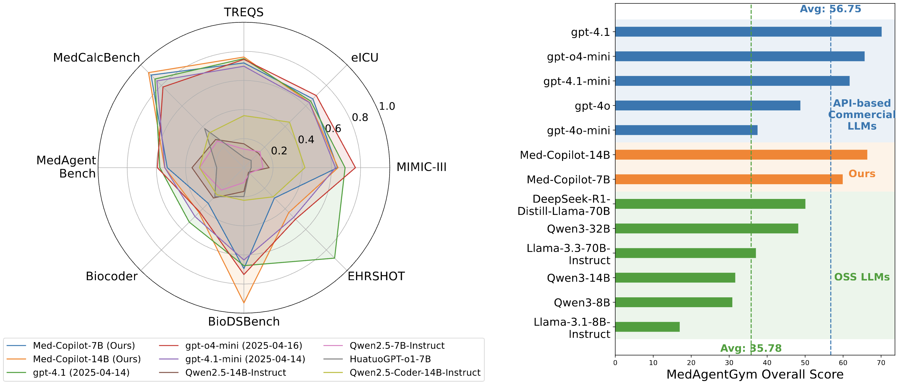

MedAgentGym Documentation


Info
This is the documentation for MedAgentGym: Interactive Medical Coding Environment. The code is built to expose implementation details as much as possible and be easily extendable. Questions and suggestions are welcome if you find any issues while using our code.

MedAgentGym is the first publicly available training envrionment designed to enhance coding-based medical reasoning capabilities in large language model (LLM) agents. MedAgentGym comprises 72413 task instances across 129 categories derived from 12 authentic real-world biomedical scenarios. We are actively expanding the benchmark to include more medical coding backbone models, agent scaffolds and datasets. This is an arduous task, and we welcome contribution or collaboration in any form.
Info
The following of this page introduces the basic information and structure of the MedAgentGym project. For its utilization or customization, please visit the Experiments or Customization pages.
Backbones
The following backbone models are implemented in MedAgentGym, and their performance discussed in the article.
| Backbone Models | Paper | Model Link |
|---|---|---|
| API-based Proprietary LLMs | ||
| gpt-4o-mini | link | link |
| gpt-4o | link | link |
| gpt-4.1(-mini) | link | link |
| o4-mini | link | link |
| OSS (Base Size): Less than 10B parameters | ||
| Gemma-3-4b-it | link | HuggingFace |
| Qwen3-1.7B | link | HuggingFace |
| Qwen3-4B | link | HuggingFace |
| Qwen3-8B | link | HuggingFace |
| Qwen2.5-7B-Instruct | link | HuggingFace |
| Llama-3.1-8B-Instruct | link | HuggingFace |
| Ministral-8B | link | HuggingFace |
| OSS (Large Size): 10 - 30B parameters | ||
| Qwen3-14B | link | HuggingFace |
| Qwen2.5-14B-Instruct | link | HuggingFace |
| DeepSeek-R1-Distill-Qwen-14B | link | HuggingFace |
| OSS (XL Size): More than 30B parameters | ||
| Qwen3-32B | link | HuggingFace |
| Qwen2.5-32B-Instruct | link | HuggingFace |
| DeepSeek-R1-Distill-Qwen-32B | link | HuggingFace |
| QwQ-32B | link | HuggingFace |
| Llama-3.1-70B-Instruct | link | HuggingFace |
| DeepSeek-R1-Distill-Llama-70B | link | HuggingFace |
| Coding LLMs and Medical Reasoning LLMs | ||
| Qwen2.5-Coder-7B-Instruct | link | HuggingFace |
| Qwen2.5-Coder-14B-Instruct | link | HuggingFace |
| HuatuoGPT-o1-7B | link | HuggingFace |
| m1-7B-23K | link | HuggingFace |
| MedReason-8B | link | HuggingFace |
| Baichuan-M1-14B-Instruct | link | HuggingFace |
MedAgentGym also support easy integration of your own backbone models. To use your own backbones, please check the customization guide.
Supported Medical Reasoning Tasks
Currently, MedAgentGym supports training and evaluation over 12 authentic real-world biomedical datasets.
| Dataset | Data Type | # Task Type | Paper | Data Link |
|---|---|---|---|---|
| Training and Internal Validation (In-Distribution) | ||||
| MIMIC-III | Tabular | 9 | MIMIC-III, EHRSQL, EHRAgent | Raw, Preprocessed1, Preprocessed2 |
| eICU | Tabular | 10 | eICU, EHRSQL, EHRAgent | Raw, Preprocessed1, Preprocessed2 |
| TREQS | Tabular | 4 | TREQS, EHRAgent | Preprocessed1, Preprocessed2 |
| MedCalcBench | Text | 55 | MedCalcBench | Data |
| MedAgentBench | Tabular | 10 | MedAgentBench | Data |
| BioCoder | Text | 8 | BioCoder | link |
| EHRShot | Tabular | 15 | EHRShot | link |
| BioDSBench | Text | 12 | BioDSBench | link |
| External Validation (Out-Distribution) | ||||
| EHR-SeqSQL | Tabular | 4 | EHR-SeqSQL | link |
| EHRCon | Tabular | 3 | EHRCon | link |
| MIMIC-Extract | Tabular | 3 | MIMIC-Extract | link |
| N-PowerAI | Text | 6 | NPowerAI | - |
Data
Info
All our prepared data can be downloaded through a download script on GitHub. The script can help pull all the data from a private HuggingFace repository owned by an anonymous account.
MedAgentGym focuses on verifiable medical reasoning tasks that benefit from code-based solutions. Clinically, we prioritize tasks originating from real-world health-care scenarios and validated by a multi-disciplinary panel of healthcare experts. For example, MedAgentGym involves MIMIC-III and eICU in EHRSQL collected from 222 hospital staff members and annotated by human programmers. Computationally, we integrate diverse biomedical coding tasks, ranging from structured medical information retrieval to open-ended biomedical research, ensuring comprehensive coverage and task diversity.
To standardize tasks across various sources, each instance in MedAgentGym is structured with: (1) a problem description, (2) verifiable ground-truth outputs, and (3) optional data resources (e.g., EHRs). Additionally, standardized system and user prompts are designed to initiate the problem-solving process. MedAgentGym is highly flexible, easily accommodating new tasks that include clear descriptions and verifiable ground-truth outputs. For coding-centric with only code solutions (e.g., BioCoder), we perform verification based on the execution output of provided code solution, which are more reliable than code alone. For tasks involving additional data resources (e.g., EHRSQL), we include metadata on data access and sources. Additional task-specific preparation details are documented.
Typically, each dataset must comprises 2 files: train_tasks.jsonl, test_tasks.jsonl.
Besides, according to the task type, you should also add the required data sources that agent need to access during coding into the dataset directory.
For example, if the dataset is data base related task, you should include data base files *.csv, or the SQL-integrated version *.db, so that the agent can access the data during coding.
If the dataset is a machine learning task, that requires to predict specific labels given the training features, you should include the training features and labels in the directory as well.
In EHRShot and MIMIC-Extract, we both provide the pickled features in *.pkl files and save the labels into *.csv files.
Aside from the individual dataset files, we also provide a metadata.json file that contains the metadata of all the datasets, including total number of tasks for training and testing.
*_tasks.csv file contains two columns:
idx: A unique identifier of the query sample in the task. Typically used for debug and reproducibility.question: A question that is prompted to the model. The question is testing the model's code-based reasoning capabilities in solving bio-statistics or biomedcal computational problems.answer: A verifiable answer to the question. We do not require the intermediate solution or ground-truth code snippets. For those computational problems, we directly use the ground-truth answer. For coding problems offering ground-truth solutions, we execute their code in advance and use the execution results as the final answer. We do not use the code, because we want the model to generate diverse and creative solutions when coding to solve problems.
Agent Scaffolds
Following CodeAct, we introduce a default agent scaffold designed for systematic evaluation of coding-based medical reasoning. Interactions within MedAgentGYM are formulated as a Partially Observable Markov Decision Process (POMDP), where tasks are represented as medical reasoning problems sampled from a set \(P\). At each timestep \(t\), the agent receives an observation \(o_t\in\mathcal{O}\) and determines the next action \(a_{t+1}\in\mathcal{A}) based on the interaction history.
request_info: Retrieves relevant data from external sources such as Electronic Health Records (EHRs).terminal: Handles dependencies or manages local files within isolated Docker environments.code execution: Executes code generated by Large Language Models (LLMs) through an integrated interpreter.debugging: Converts code execution errors into comprehensible natural language explanations, enriched with detailed error information to enhance LLM understanding.
Additional details can be found in ./env/action/ directory.
Citation
If you find our work helpful, please consider citing it as
@misc{xu2025medagentgymtrainingllmagents,
title={MedAgentGym: Training LLM Agents for Code-Based Medical Reasoning at Scale},
author={Ran Xu and Yuchen Zhuang and Yishan Zhong and Yue Yu and Xiangru Tang and Hang Wu and May D. Wang and Peifeng Ruan and Donghan Yang and Tao Wang and Guanghua Xiao and Carl Yang and Yang Xie and Wenqi Shi},
year={2025},
eprint={2506.04405},
archivePrefix={arXiv},
primaryClass={cs.CL},
url={https://arxiv.org/abs/2506.04405},
}